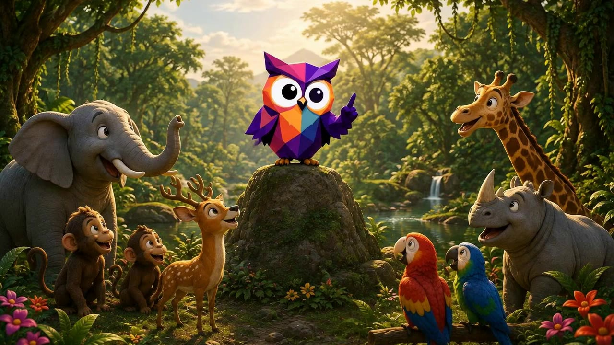
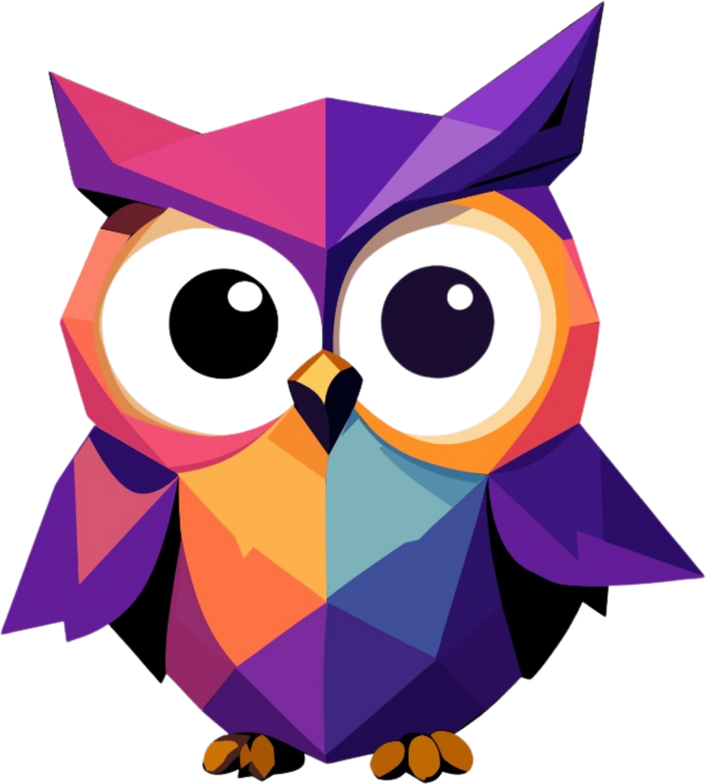
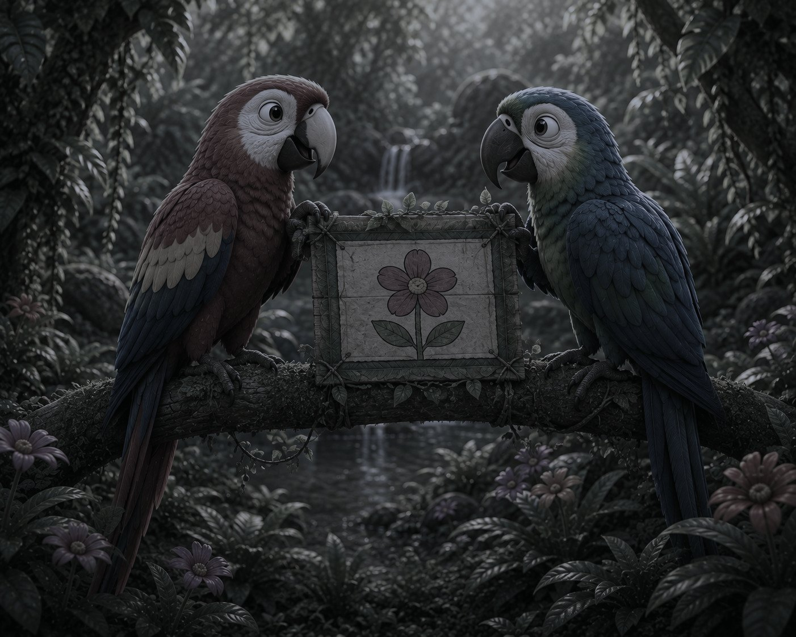
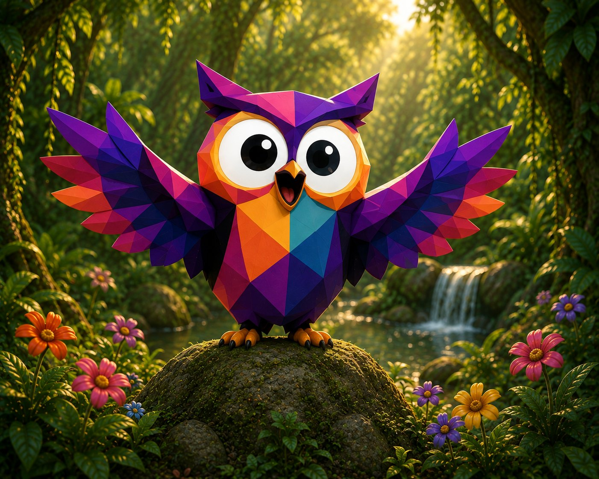
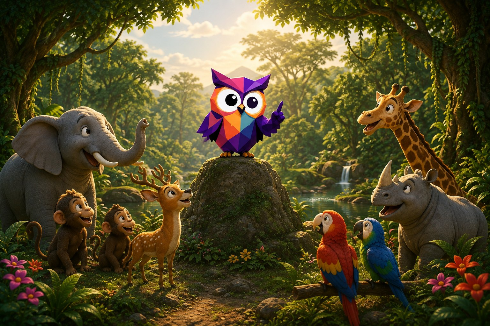
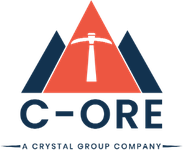
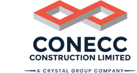
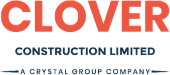
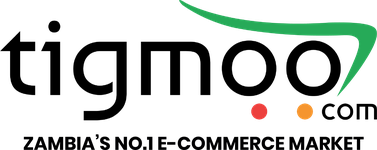

Contribution 01
Elephants
Brought the water.

Massbar
Every brand has a story.
Let's make yours impossible to ignore.

Chapter One
Deep in the jungle, all the animals decided to build the most beautiful garden.





Brought the water.
Planted the seeds.
Collected the flowers.
Spread the word.
Everyone was working hard. But nothing was growing.
Everyone had good ideas. But nobody was communicating.
Then the Owl gathered everyone, listened, and made one clear plan — with a role for each of them.
Slowly, the garden began to bloom.
That's how something beautiful gets built.
Brought the water.
Planted the seeds.
Collected the flowers.
Spread the word.
Everyone was working hard. But nothing was growing — everyone had good ideas, and nobody was communicating.
Then the Owl gathered everyone, listened, and made one clear plan — with a role for each of them.
Slowly, the garden began to bloom.
That's how something beautiful gets built.
The owl: the one who sees the whole picture"Great things don't happen when everyone simply works hard. They happen when everyone understands the same idea."
— The Owl
This is what we do
Good people, good ideas, good intentions — all pulling in slightly different directions. Massbar is the Owl: we listen, build the one clear plan, and give every part of your marketing a role in it.
The owl in our mark is not decoration. It stands for the part of the job that happens before anything is designed — watching closely, reading the market, seeing what others miss in the dark. Its facets stand for the second half: many disciplines, cut precisely, assembled into one recognisable whole.
Capabilities
Taken individually they solve a problem. Taken together they build a brand that behaves consistently everywhere a customer meets it.
The Owl — sees the whole picture
The foundation a brand stands on: what it means, who it speaks to, how it looks and how it sounds.
Monkeys — the seeds
Ideas turned into work people stop for, designed for the format, the platform and the moment it is seen in.
Parrots — the word
Growing your presence where your audience already spends its attention — targeting, budgets and reporting handled properly.
Deer — where it lands
Websites and platforms that load fast, work on a phone, and turn interest into enquiries.
Elephants — the water
From the first concept to the final performance report: campaigns planned, produced, placed and tracked.
The integrated model
Each service can be bought on its own. The advantage comes when they run together — which is the whole point of the garden.
Positioning, visual system and tone become the brief everything else is measured against.
Every asset is already on brand, so nothing is approved twice or rebuilt from scratch.
Content is scheduled, promoted and targeted rather than posted and hoped for.
Traffic generated by campaigns lands somewhere designed to convert it.
Proven messages are pushed wider — print, outdoor, radio, activations — on the same creative spine.
You get specialist work delivered to a professional standard, on brief and on time.
You get compounding recognition, lower production cost per asset, and one team answerable for the result.
How we work
So you always know what stage we are at, and what happens next.
Discovery, market and competitor review, audience definition, and what success is measured against.
Positioning, message, channel mix and budget — documented and agreed before production begins.
Concept, design, copy and production, presented in context so you see it as it will appear.
Rollout across agreed channels — publishing, printing, placement and activation, on a shared timeline.
Live monitoring and adjustment of targeting, budget and creative while it still matters.
Reporting, review and the next recommendations, so each campaign starts from what the last one taught us.
The difference
There is no shortage of people who will design something for you. Here is what makes working with us different.
Every project has a documented objective, audience and message before anything is created — so the work can be judged on more than taste.
We know Lusaka and the Zambian market: media consumption, pricing realities, distribution, and what genuinely resonates here.
Brand, content, digital, web and campaign delivery in one team. Fewer suppliers, fewer handovers, one point of accountability.
Project based or retainer, scoped clearly and quoted upfront. You know what you are paying for before work starts.
Agreed timelines, regular updates, and work that arrives when we said it would — including print and media deadlines that cannot move.
The same team handles a single launch or an annual calendar, so you are not briefing a new agency every time you grow.
Who we work with
The thinking stays the same; the language, channels and creative do not.
We also work with corporate organisations, NGOs and development institutions, education and health providers, and personal brands, creators and public figures.
Selected clients




The story is only beginning.
Studio
Lufubu Road 5638
Lusaka, Zambia
Phone
Massbar Advertising
massbar.advertising